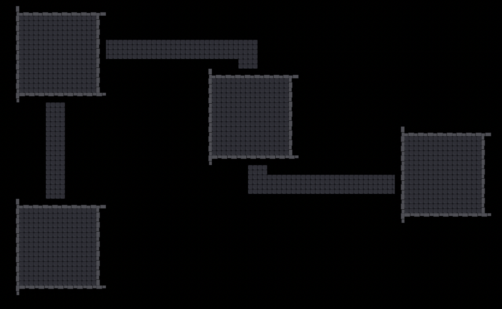
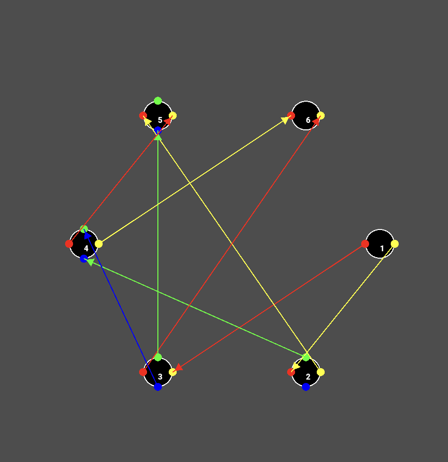

Game Dev Post 2
In this post I talk about my process creating procedurally generated levels and the challenges I faced during it.
Introduction
I knew that I wanted to have procedurally generated levels since the start of my project. I think it adds a lot of replayability to a game and it's a fun challenge to implement. I started off by researching how to implement procedural generation in Godot. I found a few tutorials and articles that helped me understand the basics of procedural generation. I then started to implement my own system.
Procedural generated levels are a key feature of rougelike/rougelite games, which I want to make. Some notable games that inspired me are "The Binding of Issac" and "Enter the Gungeon". Both of these games use premade tiles/rooms that are randomly placed together to create a level. I wanted to do something similar. Initially I wanted my level design to resemble the levels in "Enter the Gungeon", but during development I faced some challenges with this and decided to pivot and go with a design that closley resembles "The Binding of Issac".
Creating the Randomness
Before I started coding, I did some research on how different games created their procedurally generated levels. I focused more on the ones that were similar to what I wanted to create. I tried many different ways to generate a random level layout. The first way I did this was by generating a random graph given an array of edges, then mutating the graph to create a room layout. This is what was done in "Enter the Gungeon". This worked very well. I was able to create a room layout that was random and had a good amount of variety.
Another way I tried to generate a level layout was by first randomly placing the rooms then connecting them using Prim's algorithm. This also worked well but had usually only had one path, whereas the graph method generated branching paths. Both of these methods were good but the real trouble came when trying to connect the rooms with corridors.
Creating Connections
Oh man, did I have trouble with this. This was by far where most of my time was spent. I managed to connect the rooms using A* to draw the paths that Prim's algorithm created. The resulting paths were good and did connect the rooms. However the issue came when I tried to make the paths and rooms look good. I couldn't find a way to combine them in a way that looked good and functioned well. I tried many different ways to do this but I couldn't find a way that worked well. Below was one of my attempts at this.

Most of the difficulty came from trying to combine the tilemaps of the rooms and the paths. The rooms are in their own scene and added as child nodes to the main scene. The paths are drawn on the main scene. This caused conflict in the tilemaps and I couldn't find a way to combine them. I tried many different ways to do this but there was always some overlap and it didn't look good at all. Also the paths were not always connected to the middle of the rooms which is where the doors would be.
Final Result
Eventually, I decided to pivot and go with a design that was more similar to "The Binding of Issac". This means that instead of chambers that connected the rooms the player would just be teleported to the connecting room. This was much easier to implement and looked much better since I didn't have to mess around with creating paths. I'm happy with the result. I chose to use my original design of creating a random graph and then mutating it. Below is a image of the final result in graph format.

With the procedurally generation finally done, I will move my focus onto creating mobs, guns, and a boss. I want to focus more on the game desgin aspect now. I'm excited to see how this project will turn out.
Conclusion
My expierence with procedural generation was a fun and challenging one. I learned a lot about how to create random levels and how to connect them. I'm happy with the result and I think it will add a lot to my game. I'm excited to see how the rest of the game will turn out.
Thanks for reading.
Posted by: Aidan Vidal
Posted on: July 4, 2024